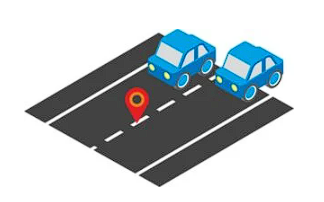
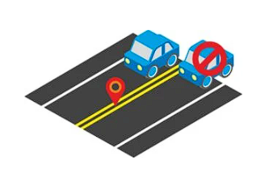
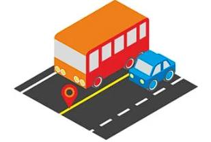
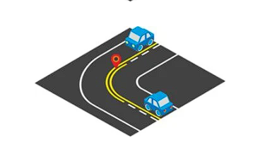
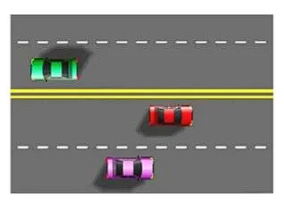
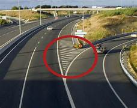
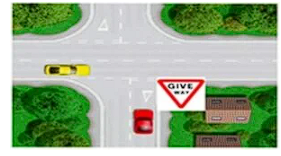
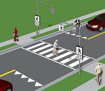
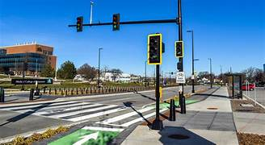

Purpose of Pavement Markings
Pavement markings provide essential information to drivers, helping them navigate the roadways safely and efficiently. They come in various shapes and colors, each conveying specific messages.
Longitudinal Markings
-
 Center Line (Separation Line) Marking
Center Line (Separation Line) MarkingA marking indicating the separation of opposing traffic lanes.
Tagalog: Isang pagmamarka na nagpapahiwatig ng paghihiwalay ng magkasalungat na mga daanan ng trapiko.
-

Lane Line (Broken white center line or Lane Divider) Marking
A marking indicating the separation of lanes in the same direction.
Tagalog: Isang pagmamarka na nagpapahiwatig ng paghihiwalay ng mga lane sa parehong direksyon.
-

Barrier Line Solid Double Yellow lines Marking
A marking indicating the presence of a physical barrier or no-passing zone.
Tagalog: Isang pagmamarka na nagpapahiwatig ng presensya ng isang pisikal na hadlang o lugar na hindi maaaring lampasan.
-
Broken Yellow Line Marking
A marking indicating a no-passing zone.
Tagalog: Isang pagmamarka na nagpapahiwatig ng lugar na hindi maaaring lampasan.
-

Single Solid Yellow Line Marking
A marking indicating no-passing zones.
Tagalog: Isang pagmamarka na nagpapahiwatig ng mga lugar na hindi maaaring lampasan.
-

Broken And Solid Yellow Lines (Mixed Center line) Markings
A marking indicating the separation of traffic lanes.
Tagalog: Isang pagmamarka na nagpapahiwatig ng paghihiwalay ng mga daanan ng trapiko.
-

Solid yellow Lane On Left of Traffic Direction Markings
A marking indicating the direction of traffic flow.
Tagalog: Isang pagmamarka na nagpapahiwatig ng direksyon ng daloy ng trapiko.
-
 Continuity Line Markings
Continuity Line MarkingsA marking indicating the continuation of a lane.
Tagalog: Isang pagmamarka na nagpapahiwatig ng pagpapatuloy ng isang lane.
-

Transition Line Marking
A marking indicating a change in the type of lane or road.
Tagalog: Isang pagmamarka na nagpapahiwatig ng pagbabago sa uri ng lane o kalsada.
-
 Stop Line Marking
Stop Line MarkingA marking indicating where vehicles must stop before the white line at an intersection.
Tagalog: Isang pagmamarka na nagpapahiwatig kung saan dapat huminto ang mga sasakyan bago ang puting linya sa isang intersection.
-

Give Way Or Holding Lines Marking
A marking indicating where vehicles must give way or hold their position at an intersection.
Tagalog: Isang pagmamarka na nagpapahiwatig kung saan dapat magbigay-daan o huminto ang mga sasakyan sa isang intersection.
-

Pedestrian Intersection Non Signalized Marking
A marking indicating where pedestrians may cross at an intersection without a signal.
Tagalog: Isang pagmamarka na nagpapahiwatig kung saan maaaring tumawid ang mga pedestrian sa isang intersection na walang signal.
-

Pedestrian Intersection Signalized Marking
A marking indicating where pedestrians may cross at an intersection with a signal.
Tagalog: Isang pagmamarka na nagpapahiwatig kung saan maaaring tumawid ang mga pedestrian sa isang intersection na may signal.